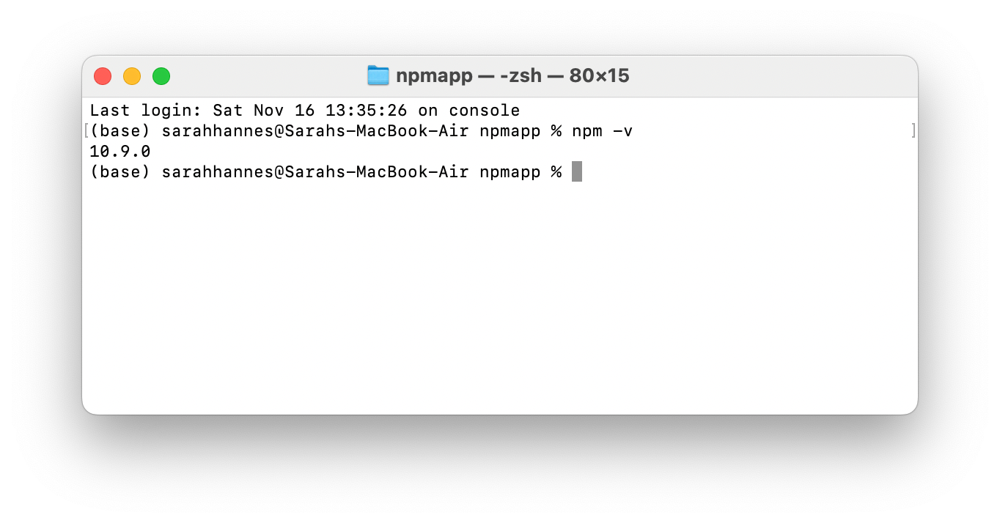

NPM Cheatsheet
Check npm version
 1. Run npm -v in terminal.
Create package.json
1. In project folder, run npm init. 2. Answer all questions or leave blank to accept default answers.
To skip all prompts and accept all default values, use npm init --yes in project folder
To set default values in package.json
1. In project folder, run npm config set init-{key we want to change} "{new value}" to set the new value to the config key. For example, if we wanted to change the default author name to the value “MY NAME”: npm config set init-author-name "MY NAME". 2. Confirm that the default value has been set to the new value by running npm init npm init -y. 3. The package.json file will be created in the project folder.
Other example: - To change default license type to MIT: npm config set init-license "MIT"
To check the default value for certain key
1. Run npm get init-author-name
Other example: - To check the default license type: npm get init-license
Remove the default values we’ve set
1. Run npm config delete {key we want to revert to default before change}.
Some examples: - To revert license to its default: npm config delete init-license. - To revert author to its default: npm config delete init-author-name.
Install node module
1. In project folder, run npm install {module name} --save. For example, to install lodash module: npm install lodash --save. 2. The module will be downloaded in .node_modules folder in the project directory, and will be included under the dependencies in package.json.
Note: - Find node module to install at https://www.npmjs.com/. - --save is important, it writes the module we just installed as the project dependency in package.json. - If we did not include --save, npm will still install the module but will not write it as a depedency.
Import module
1. To import module we’ve installed const my_new_module = require('library name'). For example, on line 1 above we imported lodash module as _, this is just the convention for lodash. We can name the variable anything we want. 2. We use dot notation to use functions from the imported module. For example on line 4, we call the function each from lodash library by _.each()
To run .js file
1. In the project terminal, run node {name of js file}. Here, the name of the file we want to run is index.js. We could run it with node index or node index.js.
To install all modules listed as dependencies using package.json
1. Say you fork/clone a repo from github and you want to run their js file locally, you need to first install all the dependencies that their project uses. To do so, first make sure we have package.json file in the project folder. 2. Run npm install. This will install all modules listed under dependencies in package.json. If we have modules listed under devDependencies in package.json, this command will also install of of them. 
dev dependencies
dev dependencies are modules that you only need for development and not for production. One example would be gulp module, which is a task runner, used to do things like minify javascript, compile sass file. 1. To install module as dev dependencies, we run npm install {module we want to install} --save-dev. We can also write the --save-dev portion at the front like npm install --save-dev {module we want to install}. In this example, we installed gulp as dev dependencies, and notice that they were listed in devDependencies in package.json file. Also notice that in ./node_modules, we now have all of our project’s dependency + the dependencies of our dependencies.
To exclude installing dev dependencies
- To install only the modules listed under dependencies, run
npm install --productionornpm install --omit=devas the warning stated.
To uninstall modules
To uninstall regular dependencies
- Use
npm uninstall {module name} --save - The module will then be deleted from .node_modules folder.
--saveflag make sure the module we’ve uninstalled will then be removed fromdependenciesin package.json.
To uninstall dev dependencies
- Use
npm uninstall {module name} --save-dev - The module will then be deleted from .node_modules folder.
--saveflag make sure the module we’ve uninstalled will then be removed fromdevDependenciesin package.json.
Before: After:
Note: instead of the keyword uninstall, we can also use one of remove rm un.
To install specific version
- Run
npm install {module name}@{version we want}. For example, if we want to install lodash at version 4.17.3, then we runnpm install lodash@4.17.3.
To list all packages you have installed
npm list - This will list everything, including all of the dependencies of your dependencies.
npm list --depth 0 - This will list only your dependencies (and not include your dependencies’ dependencies).
npm list --depth 1 - This will list only your dependencies and their dependencies (and not their dependencies’ dependencies).
To install global modules
Run
npm install -g {module we want to install globally}. Egnpm install -g nodemon. Nodemon is a module that can continuously watch your applications so that you don’t have to keep restarting it every time you edited it.When we install globally, it will be installed on our actual machine, not on the node_modules in the project folder. To check where it is being installed, we run
npm root -g.
To remove global modules
npm remove -g {module to remove}. Egnpm remove -g nodemon.
About package.json scripts
 We can change the script section of package.json file to make it easy for others to run our code.
We can change the script section of package.json file to make it easy for others to run our code.
For example, we can run our main file directly if we use command npm start. This will look into the package.json file, under the script section and find the keyword start and run the command we saved for that.
Other commonly used scripts and command:
# in package.json
"scripts" : {
"server": "live-server"
}
# run with command
npm run serverNote: - We can use any keyword as key (eg the key we used above is “server”). - Unless the keyword we used as key are one of (start, test), then the command need to include run eg npm run {key}.
About version controls
^(read as caret) eg^4.17.21: will install the most recent minor version. Eg if most recent minor version is4.18.0, then it will install that.~(read as tilde) eg~4.17.21: will install the most recent patch version. Eg if most recent patch version is4.17.22, then it will install that.*: will install the most updated version. This might not be a good idea because the new major version might break our code.- If we did not include any of above symbols, it will install that exact version.
Tips
- When uploading into git repository, you should only include
package.jsonfile and not include the ./node_modules folder. You should include this in your .gitignore. This is because the ./node_modules just stores all the 3rd party libraries you installed for your project.